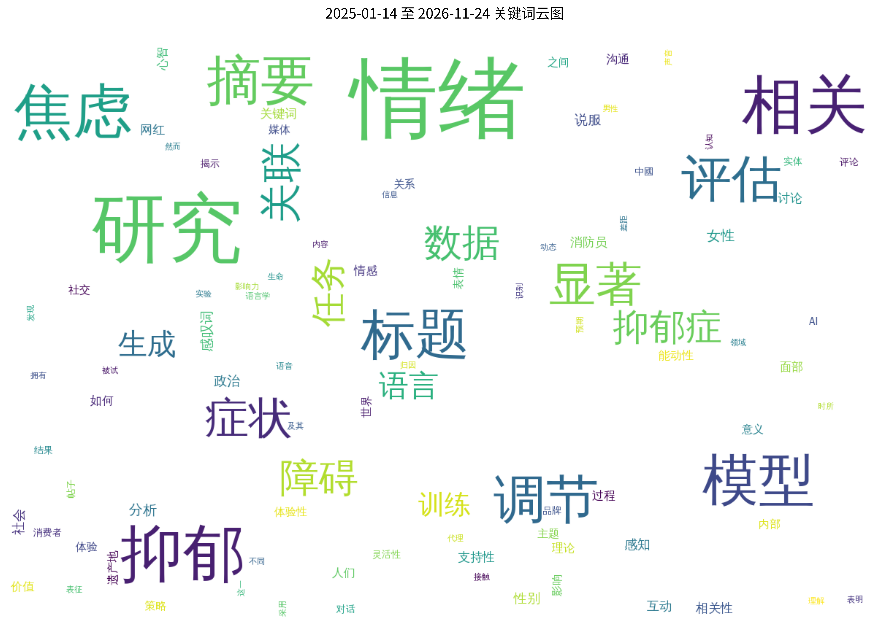

原文标题： The sound of persuasion: Using generative AI to identify gender gaps in political influence.
摘要： 女性在说服性影响力方面常常处于劣势，尤其是在政治等情境中，对女性行为的预期可能与对该领域和角色的性别化预期相冲突。尽管这一模式广泛存在，但说服中性别差距背后的机制难以在动态政治对话中分离和检验。女性说服力较弱，可能仅仅是因为角色预期促使他人认为女性在谈论政治或某些政治话题时权威性较低。另一种可能是，女性说服力较弱是因为她们倾向于使用效果较差的语言模式或修辞策略。我们采用一种原创的基于AI的方法，将4300名人类被试置于与AI代理进行的逼真、实时电话对话中。这些代理被随机分配男性化或女性化的性别化对话主题，以及男性或女性声音，从而使我们能够在保持其他修辞内容和策略要素不变的情况下操纵主题和对说话者性别的感知。在验证实验处理之后，我们发现，由声音所提示的AI代理感知性别没有直接影响。然而，性别影响了说服性互动的其他重要方面。研究被试更容易被男性化主题（国防开支）说服，而不是女性化主题（援助穷人）。此外，平均而言，女性研究被试比男性更容易被说服。鉴于男性和女性在政治对话中强调不同主题并拥有不同的讨论伙伴，这些动态很可能塑造女性的政治说服影响力。
关键词： 生成式AI；性别差距；政治说服；语音感知；社会认知
论文链接： PubMed
原文标题： Short-term flexibility and long-term stability in models of mind perception.
摘要： 理解人们如何判断某人或某物是否拥有心智，是众多心理学、生物学和哲学问题的核心。它塑造了个体层面（如社会互动）和社会层面（如道德与伦理）的基本过程。尽管心智感知已有研究，但人们在将心理能力归因于实体时使用何种内部模型仍不清楚。通过四项实验（总N=256），我们探究了人们在将能动性和体验性归因于日常生活中遇到的、在生命性和社会性上存在差异的实体（如人类、宠物、机器人、语音助手、工具）时所持有的模型及其灵活性。我们采用表征相似性分析，结合实验室实验、为期6周的社会互动干预以及纵向真实生活接触，通过将观察到的评分数据与理论模型进行比较，检验人们使用何种模型来归因能动性和体验性。我们证明，生命性区分构成了体验性归因表征结构的基础，而能动性归因的内部模型则更具特异性和灵活性。当接收到关于某一实体的明确信息时，能动性的内部模型会发生变化。人们通过整合该信息来更新其模型，并在整个实体类别上进行泛化。我们未发现证据表明长期接触或拥有无生命技术（如机器人或语音助手）或宠物会导致体验性或能动性模型的重构。总体而言，这些结果揭示了人们在感知心智时所持有的内部模型及其灵活性，并为理解心智感知的根源与后果提供了途径。
关键词： 心智感知；能动性；体验性；内部模型；表征相似性分析
论文链接： PubMed
原文标题： Interjections and Emotion (with Special Reference to “Surprise” and “Disgust”)
摘要： “所有语言都有‘情绪感叹词’（即表达基于认知的感受的感叹词）”（Wierzbicka 1999, p. 276）——然而，与针对面部表情和情绪类别词汇的大量研究相比，情绪研究者对感叹词的研究投入极少。本文概述感叹词的功能、意义及跨语言变异性，重点讨论非词汇性感叹词，如Wow!、Yuck!和Ugh!。研究目标在于介绍一个对多数读者而言较为陌生的领域，说明一种主流语言学方法（自然语义元语言[NSM]）如何处理感叹词意义，并启动关于情绪感叹词跨学科研究议程的讨论。示例取自英语、波兰语和粤语。
关键词： 情绪感叹词；惊讶；厌恶；自然语义元语言；跨语言变异
论文链接： Crossref
原文标题： The Mediating Role of Emotion Regulation Strategies in the Relationship Between Big Five Personality Traits and Anxiety and Depression Among Chinese Firefighters
摘要： 识别预防消防员焦虑和抑郁的保护因素具有重要意义。本研究探讨了情绪调节策略是否在中國消防员人格特质与焦虑、抑郁之间起中介作用。研究招募了约716名中國消防员，完成情绪调节问卷（ERQ）、焦虑自评量表（SAS）、抑郁自评量表（SDS）和大五人格量表第二版（BFI-2）。结果（N=622）表明，仅消极情绪性特质能预测焦虑症状。同时，多层中介效应分析显示，尽责性通过认知重评可减少中國消防员的焦虑和抑郁症状。本研究阐明了中國消防员人格特质与焦虑、抑郁之间的潜在情绪调节过程。研究讨论了启示、局限及未来方向。
关键词： 情绪调节策略；大五人格；焦虑；抑郁；消防员
论文链接： Crossref
原文标题： A Multimodal Emotion Perspective on Social Media Influencer Marketing: The Effectiveness of Influencer Emotions, Network Size, and Branding on Consumer Brand Engagement Using Facial Expression and Linguistic Analysis
摘要： 社交媒体网红依赖情感连接来维持和扩大其粉丝群体，并对品牌具有价值。然而，迄今为止，尚无研究定量考察网红在视频帖子中使用的面部表情和字幕文本中的情绪如何通过帖子的点赞、评论和浏览量影响消费者参与度。本研究以消费者品牌参与、心理社区感和面部展示行为生态学视角为理论基础，运用社交媒体分析、面部表情分析和计算语言学分析，评估了402条视频帖子的情绪实质，这些帖子来自知名的微型、中型和大型网红母亲（被称为“InstaMoms”），作为Instagram网红的典型代表。研究发现，所使用情绪的数量和特定的离散情绪对参与度具有实质性影响，而粉丝数量和品牌化呈现均显著有助于更深入地理解这一关系。研究识别并讨论了理论与实践的启示。
关键词： 情绪；面部表情分析；社交媒体网红；消费者品牌参与；计算语言学
论文链接： Crossref
原文标题： The Interplay of Context, Experience, and Emotion at World Heritage Sites: a Qualitative and Machine Learning Approach
摘要： 本研究阐释了社交媒体上以遗产地评论形式发布的用户生成内容如何揭示世界遗产地共同创造的解读（涉及价值、有形与无形属性以及游憩后勤）与场所情感体验之间的关系。研究以两处世界遗产地为案例，从TripAdvisor获取2000余条评论，采用整合定性数字民族志与机器学习的混合方法进行分析。结果表明，TripAdvisor评论捕捉了游客在与遗产亲身接触中的情感反应，并揭示了游客在与过去互动以赋予当下意义时所体验的价值范围——包括社会价值、历史价值和美学价值。结果还表明，世界遗产地体验与语境因素之间的关系并非线性，而是由不同因素及其关联情感相互作用形成的复杂关系。本文通过反思其理论与实践意义对结果进行了讨论。
关键词： 世界遗产地；情感体验；用户生成内容；机器学习；数字民族志
论文链接： Crossref
原文标题： Bridging supportive communication and interpersonal emotion regulation: An integrative review
摘要： 在各类人际关系中，支持经历负性情绪个体的社会互动无处不在。这些社会互动被称为支持性沟通。数十年前，Burleson和Goldsmith（1998）首次指出支持性沟通与情绪调节之间的联系，旨在解释支持性信息改变接收者负性情绪的内在机制。此后，当代情绪调节理论逐渐成熟，如今可通过人际情绪调节研究的拓展以及情绪调节过程模型的发展来解释广泛的支持性沟通过程。本文旨在阐述情绪调节理论与研究的当代进展如何揭示支持性沟通中的动态过程。随后，我们讨论这一更新视角对两个研究领域的启示，并展示其如何推动跨学科研究。
关键词： 支持性沟通；人际情绪调节；情绪调节过程模型；社会互动；跨学科研究
论文链接： Crossref
